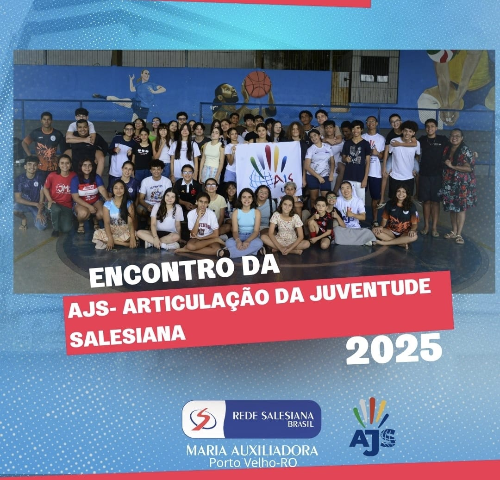

Articulação da Juventude Salesiana
A pastoral da escola retoma a AJS (Articulação da Juventude Salesiana) em Porto Velho, uma iniciativa para ouvir e dar espaço aos jovens expressarem sua fé e seus talentos, além de criar a banda da escola, formada apenas por alunos.
A banda da escola será formada somente por alunos da instituição, com o intuito de explorar talentos e criar amizades. A banda se apresentará em eventos escolares e outros.
A Articulação da Juventude Salesiana (AJS) se apresenta como uma vibrante rede global, onde jovens imbuídos da espiritualidade salesiana se unem para vivenciar o Evangelho de maneira alegre e ativa. Mais do que um simples grupo, a AJS é um espaço acolhedor, propício à construção de amizades genuínas e ao fortalecimento do sentimento de pertencimento a uma comunidade maior. Através de encontros, retiros, trabalhos sociais e projetos pastorais, a AJS oferece oportunidades para que os jovens desenvolvam seus talentos, aprofundem sua fé e descubram seu papel no mundo. Inspirados pelo legado de Dom Bosco, os membros da AJS são convidados a se tornarem agentes de transformação social, disseminando alegria, esperança e justiça em seus ambientes e comunidades.
No Brasil, a AJS se faz presente em diversas cidades, reunindo milhares de jovens empenhados na construção de um mundo mais justo e fraterno. Os grupos da AJS se organizam em níveis local e inspetorial, promovendo encontros, eventos e projetos em conjunto. Se você é jovem e busca um espaço para crescer na fé, cultivar amizades e contribuir para a transformação do mundo, a AJS te espera de braços abertos.